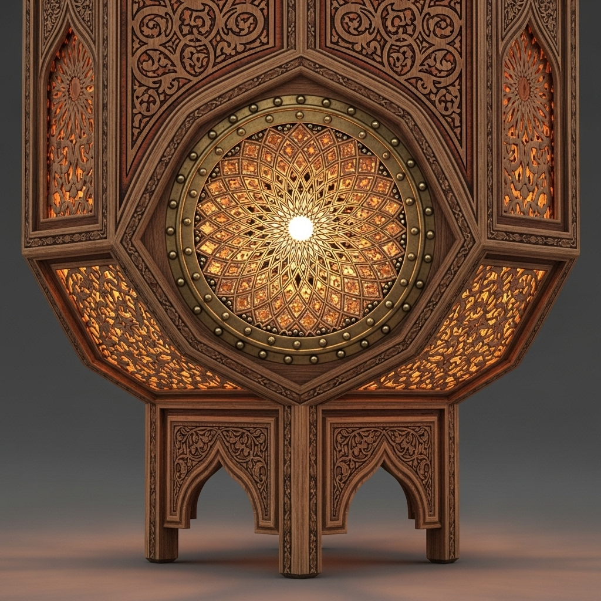

Modernisation des Techniques Artisanales Marocaines
L'harmonie parfaite entre tradition et innovation
Dans les ateliers marocains, un équilibre remarquable s'est créé entre les méthodes ancestrales et les innovations contemporaines. Découvrez comment les artisans préservent l'âme de leur art tout en adoptant des techniques modernes pour répondre aux défis du 21ème siècle.
Innovations Clés dans l'Artisanat Moderne
Conception Assistée par Ordinateur
Utilisation de logiciels 3D pour créer des motifs complexes avant réalisation manuelle, permettant une précision inégalée.

Teintures Écologiques
Développement de colorants naturels à base de plantes locales, réduisant l'impact environnemental tout en préservant la qualité.
.png)
Énergies Renouvelables
Adoption de fours solaires pour la céramique et la poterie, combinant tradition et développement durable.
.png)
Tradition et Modernité: Un Dialogue Constructif
Techniques Traditionnelles
- Métiers à tisser manuels en bois
- Motifs transmis oralement
- Teintures végétales artisanales
- Outils fabriqués à la main
Apports Modernes
- Métiers mécaniques assistés
- Archivage numérique des motifs
- Optimisation des recettes de teinture
- Outils ergonomiques
"La modernisation ne signifie pas l'abandon de nos traditions. Au contraire, elle nous permet de les préserver en les rendant plus accessibles aux nouvelles générations."
Fatima Zahra, Maître tisserande à Marrakech
Impact de la Modernisation
+40%
Productivité des ateliers
75%
Réduction des déchets
2x
Plus de jeunes formés